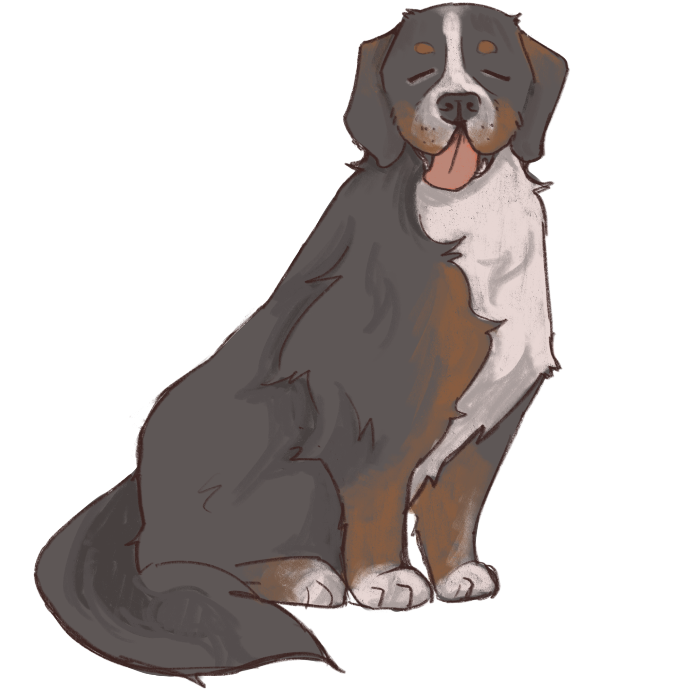
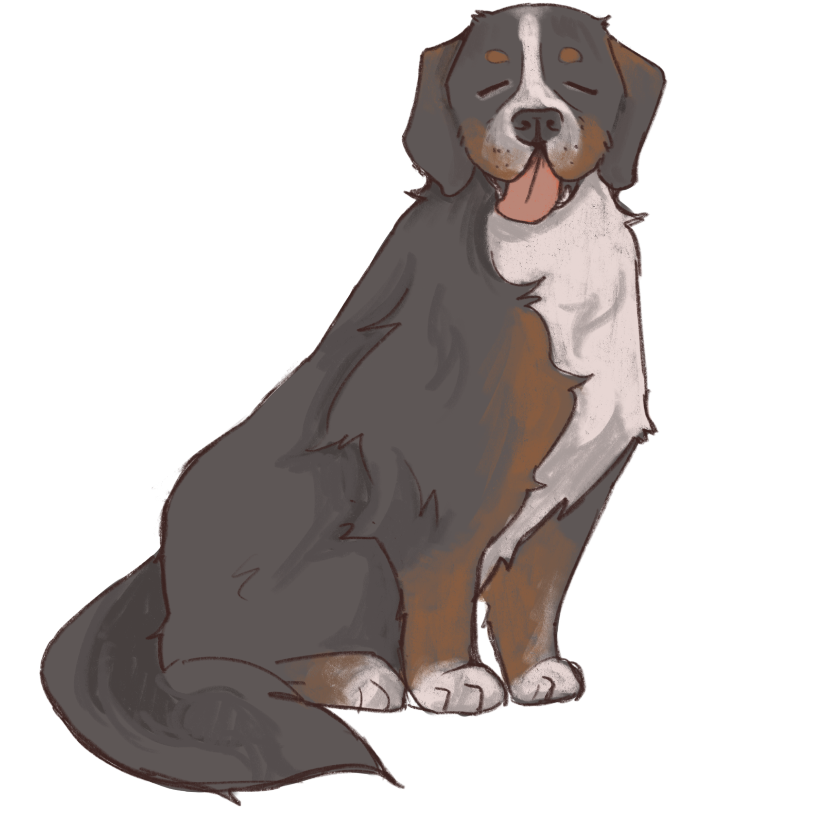

Meet the Dawgs!
Pixie our Pomski is the embodiment of energy. Bouncing off the walls is just how she walks.
If you select her she comes with a pack of energy drinks and caffeine shots! (Not optional)
Her best tunes are anything that gives a nice energy blast. Pop, phonk, EDM, and she even has a
selection of popular video game soundtracks!
ostume selection: rave gear, glitter with a tutu, or any popular pop artist you can think of!
 

Baked Beans the Bernise is known for his very nostalgic persona and deep care for everyone to be equally loved. He is a great cuddle buddy and an equally great party animal. His best tunes are oldies, anything from the 1920 to 1950s. Blues, jazz, swing, ragtime... you name it!
Costume selection: 1920s gangster, 1950s greaser, or a classic tuxedo.
Sinbad our Shepard is a retired search and rescue dog, who just could not stay away from the idea of being around people and making them happy. Since he's an older soul he prefers calmer tunes, his preferences include classical, indie, and anything else mellow that will cure your soul.
Costume selection: you can try to put an outfit on but he will never look at you with light in his eyes again.
Kat is our "sweetest of all" chocolate Labrador Retriever. She is the best with kids and does not mind loud noises and sticky fingers. Kat also happens to be a major rock fanatic! Any and all forms of rock are her preferred showtunes. From classic, alternative, progressive... also down to play grunge and metal! Warning: please do not leave Kat around your rock records, she has a tendency to eat them.
Costume selection: anything rock inspired, from just a simple band t-shirt to a whole artist!
Bark does suspiciously look like a cat, to which we cannot truly confirm or deny... He does not really prefer people, however he will tolerate them. Bark is okay with any genre of music but prefers it to be on the quieter side. He also will not dj for you without a large selection of snacks so be prepared! His favorite sounds are silence and rain, but will put on a killer show! (Sometimes)
Costume selection: prefers to keep what he has on, thanks.